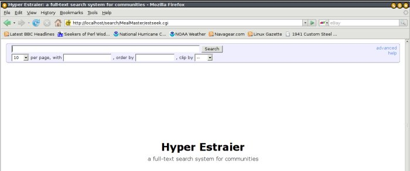

Hyperestraier Redux - A User-friendly Approach
By Ben Okopnik
Thanks to Karl Vogel's recent article about Hyperestraier, I've been playing around with indexing some of my data - and having lots of fun in the process. I discovered that Hyperestraier is exceptionally good at what it does; it's a fantastic app, and I wish I'd known about it years ago. It lets me build fast, searchable databases of almost any textual content, including anything that can be converted to text, and to have a Web interface to those databases. This article documents the results of my experience in exploring Hyperestraier, and presents a few "aids to navigation" to make indexing and searching pleasant and fun - or at least as pain-free as possible.
Personal Quirks Warning
Please note that throughout this article, I use several assumptions in order to standardize things:
- I always create the index database inside the directory that I'm indexing
- This means that I have multiple indexes to search instead of just one, but I prefer having it that way: if I'm searching for something that was said in an email, I don't want to find a similar result in, e.g., my recipe list or my article archives.
- The database name is always the current dirname prefixed by 'search'.
- I realize, of course, that this can lead to conflicts - e.g., if you have a ~/myfiles as well as a /usr/local/myfiles - but this has not been a problem in practice. Besides, renaming either the source directory (preferred) or the search link in the Web interface (the only place where there could be a conflict) is trivial, and would resolve the problem instantly.
- The Web interface for all the searches is organized under a single URL
- http://localhost/search is easy to remember - and since the links have the same name as the indexed directory, choosing the correct one is easy and obvious. For that matter, so is figuring out the direct URL to a given search page: I know that, e.g., the search page for my ~/Mail directory can be found at http://localhost/search/Mail.
Overall, this scheme suits my preferences very well. It allows me to draw obvious conclusions instead of having to remember how and where I indexed things and what I called the database for a given directory. You don't have to do it that way, but I find it very convenient - since I have better things to store in my memory than arbitrary trivia.
The Basics
The simplest scenario for using Hyperestraier is one in which you have a number of ".txt", ".htm", or ".html" files (one of Hyperestraier's minor flaws is that it has a Windows-like tendency to assume that files are defined by their extensions; fortunately, as we'll see later on, this is remediable.) These may even be mixed in with a bunch of other content - e.g., images, PDFs, music files, and so on; Hyperestraier will just ignore all of those by default, so indexing the textual content takes nothing more than
cd /home/joe/XYZ estcmd gather -sd searchXYZ .
This will index the content of '/home/joe/XYZ', creating a database (a subdirectory containing the index data) called 'searchXYZ' in the directory where you've issued the command. The "-sd" option is one that I like to use, although it's not required: it records the modification date of each file as part of the searchable data. This provides an additional search option and allows a bit more flexibility and precision in your searches.
So, let's try it out and see how it looks. First, I'm going to fake up a directory with "perfect content":
# Copy all ".txt" and ".html" files from my ~/www directory to /tmp/X
find ~/www -type f -size +0 -iregex '.*\(html\|txt\)' -exec cp {} /tmp/X \;
# How many files was that, anyway?
ls /tmp/X|wc -l
2924
# How big is all that stuff?
du -sh /tmp/X|cut -f1
342M
Next, I'll index it:
cd /tmp/X estcmd gather -sd searchX .
The output looks like this:
estcmd: INFO: reading list from the directory: . estcmd: INFO: status: name=searchX dnum=0 wnum=0 fsiz=6899176 crnum=0 csiz=0 dknum=0 estcmd: INFO: 1 (/tmp/X/00ReadMe.txt): registered estcmd: INFO: 2 (/tmp/X/00_READMEFIRST.txt): registered estcmd: INFO: 3 (/tmp/X/A Time Comes In Your Life.txt): registered [ ...skipping a few thousand lines ] estcmd: INFO: 2922 (/tmp/X/yaw.html): registered estcmd: INFO: 2923 (/tmp/X/youtube.html): registered estcmd: INFO: 2924 (/tmp/X/zQdebit-orderform.html): registered estcmd: INFO: flushing index words: name=searchX dnum=2924 wnum=1 fsiz=41568116 crnum=157951 csiz=56815761 dknum=0 estcmd: INFO: flushing index words: name=searchX dnum=2924 wnum=10001 fsiz=41935584 crnum=147951 csiz=55749775 dknum=0 estcmd: INFO: flushing index words: name=searchX dnum=2924 wnum=20001 fsiz=45899931 crnum=137951 csiz=50521003 dknum=0 estcmd: INFO: flushing index words: name=searchX dnum=2924 wnum=30001 fsiz=49897291 crnum=127951 csiz=45494307 dknum=0 estcmd: INFO: flushing index words: name=searchX dnum=2924 wnum=40001 fsiz=52269735 crnum=117951 csiz=42341097 dknum=0 estcmd: INFO: flushing index words: name=searchX dnum=2924 wnum=50001 fsiz=54037209 crnum=107951 csiz=39543361 dknum=0 estcmd: INFO: flushing index words: name=searchX dnum=2924 wnum=60001 fsiz=55833455 crnum=97951 csiz=36869171 dknum=0 estcmd: INFO: flushing index words: name=searchX dnum=2924 wnum=70001 fsiz=58203816 crnum=87951 csiz=33508862 dknum=0 estcmd: INFO: flushing index words: name=searchX dnum=2924 wnum=80001 fsiz=61974918 crnum=77951 csiz=28867366 dknum=0 estcmd: INFO: flushing index words: name=searchX dnum=2924 wnum=90001 fsiz=64163782 crnum=67951 csiz=25698000 dknum=0 estcmd: INFO: flushing index words: name=searchX dnum=2924 wnum=100001 fsiz=66314530 crnum=57951 csiz=22858433 dknum=0 estcmd: INFO: flushing index words: name=searchX dnum=2924 wnum=110001 fsiz=69521776 crnum=47951 csiz=18789339 dknum=0 estcmd: INFO: flushing index words: name=searchX dnum=2924 wnum=120001 fsiz=71238559 crnum=37951 csiz=16151196 dknum=0 estcmd: INFO: flushing index words: name=searchX dnum=2924 wnum=130001 fsiz=73565534 crnum=27951 csiz=12885585 dknum=0 estcmd: INFO: flushing index words: name=searchX dnum=2924 wnum=140001 fsiz=75759457 crnum=17951 csiz=9718694 dknum=0 estcmd: INFO: flushing index words: name=searchX dnum=2924 wnum=150001 fsiz=80626768 crnum=7951 csiz=3832485 dknum=0 estcmd: INFO: closing: name=searchX dnum=2924 wnum=157952 fsiz=83841343 crnum=0 csiz=0 dknum=0 estcmd: INFO: finished successfully: elapsed time: 0h 2m 14s
2 minutes and 14 seconds to index some 340MB of data in over 2900 files; that's not too bad! Note that dumping the output into /dev/null would have sped this up significantly; a large percentage of the above time is spent printing the data to the screen. Any errors, however, would still be shown on the console, since "estcmd" very properly directs them to STDERR rather than STDOUT.
Finally, we need to build the keyword database and optimize the index. On subsequent runs (updates), we'll need to purge the indexes of any deleted documents, too - so we might as well get in the habit of doing that now.
estcmd extkeys searchX estcmd optimize searchX estcmd purge -cl searchX
...and a few seconds later, we have a searchable index of the above content. It doesn't get a whole lot more complicated than that, either, unless you want to do something like indexing only a certain subset of the files in a directory, or indexing file types other than the above-mentioned text and HTML. That would require selecting those files ("estcmd gather" would normally ignore them in reading a directory), feeding that list to the indexer, and delegating their processing via the "-fx" option (i.e., using some external program to filter them to text, HTML, or MIME, and notifying the indexer of the output type.) For more info, see "-fx" under the "gather" heading in the "estcmd" man page.
Now that we have it built, you could search this database by using "estcmd search -vh searchX <search_term>" - but this is a bit clumsy and manual, and should really be scripted into something more useful. Toward the end of this article, I'll show you a way to easily search the index and instantly access the data once you've found its location in the index. For now, we'll keep focusing on the "data collection" phase of this process.
Decisions, Decisions
Given the dynamics of searching and examining data, the best scenario is one where you have lots of small files rather than a few large, monolithic ones. Hyperestraier can work with either one, but finding the thing you're looking for within a large file (after you've found which file has it with Hyperestraier) becomes a separate task - one that requires its own tools and methods. Besides, large files gobble lots of system resources while they're being indexed.
On my system (Ubuntu 8.04, 384MB RAM/150MB swap), any individual file over 3MB requires a perceptible interval to index, 5MB generates a significant delay, and a 10MB file may take several minutes to process. I've never been patient enough to sit through indexing a 15MB file (although I suspect that letting it run overnight would do the job.) In other words, the delays created by increasing file size go up asymptotically, so it behooves you to carefully consider the maximum file size that you'll try to process - and then to restrict your selection to files below that limit. Fortunately, the '-lf' option of "estcmd gather" makes that easy.
Overall, though, it's really not much of an issue: I've been writing (and saving) email for well over 20 years, and my mail directory contains only 5 files over the 10MB mark, with 3 of them being that large because they consist of almost nothing beyond data or image attachments (i.e., there'd be no point to searching those for text.) For the remaining two, I'm willing to use standard tools like "less"; in fact, I defined a "searchmail" function years ago that uses "less" to open and search my ~/Mail/Sent_mail file. Not quite as fast as Hyperestraier, but it does what it should and does it well.
If you should decide that you absolutely, positively have to have an index for every single bit of mail on your system, then I recommend converting to another religion (Maildir or Mh instead of mbox.) This will break everything up into individual message files, making it into a perfect snack for the ever-hungry Hyperestraier.
The Mission Moves into its Execute Phase
Having considered all these angles, I now felt reasonably confident in proceeding with the following strategy for indexing my mail directory:
cd ~/Mail estcmd gather -cm -sd -fm -lf 4 -bc searchMail . estcmd extkeys searchMail estcmd optimize searchMail estcmd purge -cl searchMail
Here's what all of that means:
| -cm | index only the files where the mtime has changed |
| -sd | record the mtime of each file as an "attribute" (searchable data) |
| -fm | treat all files as MIME (note that without this option, most of your email files would be ignored - e.g., files ending in ".com" would be rejected as DOS executables!) |
| -lf 4 | don't index files over 4MB in size |
| -bc | ignore binary files (there shouldn't be any, but might as well check) |
| . | read the files from the current directory |
I ran "estcmd gather" with all of the above, then ran the standard kit of commands to create a keyword database, optimize and clean up the index, and clean out the data for deleted docs, where "-cl" means "clean up regions of deleted documents" (this last is, again, most useful on subsequent runs after the indexed data has changed and needs to be reindexed.)
It's worth noting that "estcmd" appears to take a few moments to "wrap up" what it's doing even though you've been returned to the shell prompt, so running these commands one immediately after the other (i.e., either from a script or by executing them on one command line separated by semicolons) can result in errors. If you're going to do that, I suggest sticking a "sleep 1" command between them - particularly right before "estcmd optimize".
Re-indexing
One of the things that needs to be considered is what will happen when you re-run the indexer (presumably, your mail files will change constantly, so you'll need to reindex on a regular basis to stay current.) Because we had to use the "-fm" option, in effect telling "estcmd gather" to treat all files as MIME, every subsequent run will try to index the database files themselves along with the actual content. This would be a large and pointless waste of time and disk space, so we'll need to modify the file list that we feed to the indexer. In fact, we could do this right from the beginning - there would be no harm in it - and this would give us a generalized approach to doing things properly.
The traditional Unix tool for doing this kind of file selection is "find" - and that's exactly what we're going to use here:
# Create a temporary file and save its name in "$tmp"
tmp=$(mktemp "/tmp/searchXXXXXX")
# Construct the index name
index="search${PWD##*/}"
# Find all plain files that are non-empty; ignore the index subdirectory
find . -wholename "./$index" -prune -o -type f -size +0 -fprint "$tmp"
# Build the index using the collected filenames; skip files over 4MB
estcmd gather -sd -fm -lf 4 "$index" "$tmp"
estcmd extkeys "$index"
estcmd optimize "$index"
estcmd purge -cl "$index"
# Remove the temp file
rm "$tmp"
So, the result is...
The reward for all of the above is a very fast searchable database. How fast, you ask? Well, according to Hyperestraier, my mail index contains 2563 documents and 2937263 words - that's from about 850MB worth of files. How about 0.001 seconds to search all that text for a word with no matches, 0.074 seconds for a single match, and 0.739 for a very common word ("the")? I don't know about you, but I'd consider that pretty darn fast. Watching it happen in a text-based web browser is enough to give you whiplash - there's no perceptible time between hitting 'Search' and seeing the results. That beats 'grep' and even 'fgrep' all hollow.
Indexing Other Stuff
If you want to index something other than your mail directory, most of the process remains the same. In fact, the only things that will change are:
- The way you define/limit the list of files to be indexed.
- The name of the database - obviously. This is trivial if you follow my basic rule of "'search' plus directory name".
- The data type option for "estcmd", used as we did for the mail archive above (if you recall, this turns off the "rejection by extension" behavior and requires selecting a qualified file list). "-fm" is used for MIME, "-ft" for text, "-fh" for HTML, and "-fx <suffix> <TYPE@command>" for any other filetype you might want to index. In practice, I've found that indexing HTML files with either "-ft" or "-fh" leads to exactly the same results - i.e., a working index for all the content - and so now I lump both of the above under "-ft". Anyone who knows better - i.e., anyone who can point out an actual benefit in distinguishing the two - is welcome to contact me with a correction, but in the meantime, It Works For Me.
On To Other And Bigger Challenges
For my next indexing project, I still kept it simple but expanded the scope. I have a huge list of recipes that I've built up over the years; I started with a MealMaster database (about 70,000 recipes) and have added to it constantly since then. In the past, I'd tried loading it all into a MySQL database; I'd also tried simply creating a directory structure based on categories and cross-referencing all of them by type using symlinks. Both of these were moderately successful, with speeds of around 10-15 seconds per search. Now, I decided to run it all through Hyperestraier:
cd ~/Docs/MealMaster estcmd gather -cm -sd -ft searchMealMaster . estcmd extkeys searchMealMaster estcmd optimize searchMealMaster estcmd purge -cl searchMealMaster
In this case, I didn't need to do a whole lot with the "gather" command line: since I knew all the files were plain text, I just needed to tell it to treat them that way. Since the recipe files are actually named after the recipe they contain (i.e., their names don't match something.txt), none of them would be indexed without the "-ft" option!
Once I had typed all of the above, the indexing process took less than four and a half minutes for these tens of thousands of files. Clearly, this kind of thing is right in the center of Hyperestraier's area of competence!
The Big Challenge
Last of all, and just for the fun of it, I decided to index the rest of my
~/Docs directory. This was the biggest challenge of all: this huge directory
contains text, HTML, MIME stuff, binary data, images, music files... in
fact, 113 different types of files as reported by the "file" command! As the
Russian saying about complex and confusing situations goes, "the Devil
himself would break a leg in it". This one would take a bit more
preparation and forethought - especially in the filtering stage, since it
already contained a previously-indexed directory that I wanted to ignore -
so instead of doing it all on the command line, I decided to create a
script. Since I liked several of the ideas in Karl's article, I
stole borrowed and expanded on them. While I was at it, I
decided to generalize the script so it would apply to more than just this
one situation.
#!/bin/bash
# Created by Ben Okopnik on Sat Jan 3 00:50:54 EST 2009
# Some ideas from Karl Vogel's Hyperestraier article
# (http://linuxgazette.net/158/vogel.html)
# Maximum file size in MB; adjust this to your preferences
MAX_FILE_SIZE=3
dir="$(pwd)"
db="$dir/search${dir##*/}"
# Default options for "gather":
# -cl: Regions of overwritten documents will be cleaned up
# -ft: Files will be treated as plain text
# -bc: Binary files will be detected and ignored
# -sd: Modification date of each file will be recorded as an attribute
# -cm: Documents whose modification date has not changed will be ignored
# -lf N: Ignore any documents larger than N megabytes
gather_opts="-cl -ft -bc -sd -cm -lf $MAX_FILE_SIZE"
# Define file extensions to ignore; this saves us time, since we don't need
# to run "file" over them. This list does not include "questionable"
# filetypes (i.e., DOC, PDF, etc.) that you may want to delegate and index later.
ignore="$db|\.(gif|jpg|png|xcf|gz|tgz|tbz|p[pb]m|tiff?|mp[23g]|mpeg|wav|midi?|sid|au|r[am]|[au]law|xbm|pag|dir|swp|idx|psd|xls|sxw|zip|pgm|wm[av]|eps|swf|aux|bbl|idx|tex|raw|od[st])$"
/bin/echo "========= Searching for indexable content ============="
# If there's no EXCLUDE file, create one that just excludes itself
# (needed by the 'egrep -ivf EXCLUDE' filter.)
[ ! -f "$dir/EXCLUDE" ] && echo '/EXCLUDE$' > "$dir/EXCLUDE"
# Ignore the Hyperestraier index and any empty or "non-regular" files
/usr/bin/find . -wholename "$db" -prune -o -type f -size +0|\
# Generate 'file' output for each file, ignoring weirdness in filenames
/usr/bin/xargs -d '\n' -I '{}' -s 1000 file -F '///' '{}'|\
# Ignore these (false positives for "text" filetype)
/bin/egrep -iv '///.*(latex|rich)'|\
# Ignore everything _except_ these filetypes (positive matches); return fileNAMES
/bin/sed -n 's#^\(.*\)///.*\(text\|xml\|pod_doc\).*$#\1#;T;p'|\
# Exclude any filenames that match patterns in the 'EXCLUDE' file
/bin/egrep -ivf './EXCLUDE'|\
# Exclude filenames that match the 'ignore' pattern
/bin/egrep -iv "$ignore"|\
# Index the remaining results
/usr/bin/estcmd gather $gather_opts "$db" -
# Remove the 'spurious' EXCLUDE file
[ "`/bin/cat $dir/EXCLUDE`" = '/EXCLUDE$' ] && rm "$dir/EXCLUDE"
/bin/echo "================== Optimizing... ======================"
/usr/bin/estcmd extkeys "$db"
/bin/sleep 1
/usr/bin/estcmd optimize "$db"
/usr/bin/estcmd purge -cl "$db"
/bin/echo "==================== Finished. ========================"
Some of the features that this script introduces are quite useful: creating a file called 'EXCLUDE' in the target directory and populating it with patterns (one per line) to match any files or directories that you want to exclude will do the obvious and sensible thing. The script will also pre-filter the files to eliminate the obviously non-textual types by extension - not a perfect strategy, but one that would be used by Hyperestraier anyway - and eliminates wasting cycles in checking the filetypes for known non-textual files. Then, it actually does a filetype check on the remainder rather than relying on extensions, and filters out any non-textual types that remain (getting this right took a lot of research - all of which resulted in that long pipeline at the heart of the above script.) The script also determines the target directory name and the database name based on where it's called from - so all you have to do is "cd" into the directory you want and type "build_search".
There's also a speed-versus-completeness tradeoff you might want to think
about: the "MAX_FILE_SIZE" is set to 3 by default, which means that all
files above 3MB in size will be rejected by the indexer. You can set it
higher if you're willing to spend a bit more time: at a setting of 3, my
mail directory took only 8 minutes to index (167MB in 1430 files), while a
setting of 4 (194MB in 1436 files) took just a bit over 20 minutes.
Considering that it's relatively easy to select and index the large files
later, when you're about to walk away from the computer for a while (e.g.,
'find -size +4M -a -size -15M|estcmd gather [options] dbname -'),
there's no real need to waste large amounts of time in the original
indexing. As a result, I tend to leave it set to 3.
In general, you should be able to execute the above script in any directory that you want to index and have it Just Work. Please feel free to send me your comments and updates if anything fails or if you've come up with any improvements; it would be nice to have a general-use indexer, and feeding it lots of variations is a good way to make it bullet-proof.
Browsing the Results
You can certainly use the "search" option of "estcmd" to find what you're looking for - but it's a bit clunky, since you'd still have to go to each reported file and open it manually. Fortunately, Hyperestraier comes with a very nice CGI interface that can be configured to show the results - and with just a little more organization and scripting, connecting this with any indexes you've created can become a nearly-automatic process resulting in a neat, intuitive method of retrieving your data.
In Ubuntu, at least, the files that we need are in /usr/lib/estraier and /usr/share/hyperestraier; to start the process - assuming that you have a web server running on your system, and that it is configured appropriately - we'll just create a 'search' subdirectory under your Web root (e.g., /var/www/search), set up the appropriate structure for searching your indexes, and modify the config file as needed. Here's the script that I use to do all of the above:
#!/bin/bash
# Created by Ben Okopnik on Thu Jan 15 23:41:56 CST 2009
WEBROOT="/var/www"
dir="$(pwd)"
db="$dir/search${dir##*/}"
# Exit if there's no index database in the current directory
[ -d "$db" ] || { printf "$db not found - exiting...\n"; exit 1; }
sdir="$WEBROOT/search/${dir##*/}"
# Exit if the search directory with the proposed name already exists
[ -d "$sdir" ] && { printf "$sdir already exists - exiting...\n"; exit 1; }
# Create the ".source" dir if it doesn't already exist and copy the key
# files into it
[ -d $WEBROOT/search/.source ] || {
mkdir -p "$WEBROOT/search/.source"
cp /usr/share/hyperestraier/estseek* $WEBROOT/search/.source
cp /usr/lib/estraier/estseek.cgi $WEBROOT/search/.source
}
mkdir -p "$sdir"
cd "$sdir"
DB="$db" /usr/bin/perl -wpe's/^(indexname:).*$/$1 $ENV{DB}/' ../.source/estseek.conf > estseek.conf
ln -s ../.source/estseek.{cgi,help,tmpl,top} .
This script, when run from a directory in which you've built an index, will create a subdirectory under $WEBROOT/search with the same name as the current directory (i.e., if you're in "/home/joe/Mail", and your Web root is "/var/www", it will create "/var/www/search/Mail".) It will also populate it with links to the appropriate files for running a Hyperestraier search, and it will create a configuration file that will point to your searchable index. Since the configuration is just plain text, you should check it out and think about what else you might want to change (i.e., the page name, the default message/logo, etc.) - but from here forward, we're in the final stretch. All the rest, as they say, is just minor details.
The only part that remains is tying all of this together with a little more CGI: we need a self-updating top-level index page that will show us all the available subdirectories under $WEBROOT/search and link to them. Here it is:
#!/usr/bin/perl -wT
# Created by Ben Okopnik on Thu Jan 15 22:11:38 CST 2009
use strict;
use CGI qw/:standard/;
$|++;
my @dirs;
while (<*>){ push @dirs, $_ if -d; }
binmode STDOUT, ':encoding(UTF-8)'; # Set up utf-8 output
print header( -charset => 'utf-8' ),
start_html( -encoding => 'utf-8', -title => 'Available searches' ),
h3('Available search indexes'),
map( { a( { -href=>"$_/estseek.cgi" }, $_ ), br, "\n"} @dirs ),
end_html;
Name this file 'index.cgi', place it in your $WEBROOT/search, and point your browser at 'http://localhost/search'. You should see a list of links, one for each index you've built - assuming that you ran the above "build_www" script for each of them. Click on a link, and you'll see the Hyperestraier search interface:

Be sure to read the help page linked from the above page; it has really good tips for making your searching more precise and effective. It also helps to know that the path to each indexed file is that file's URI - and can thus be specified as part of the search. This means that you can search by filename as well as contents.
"Awesome! I'm going to use my Mozilla browser and pretend that I own Google!!!"
Hold on to that thought for a moment; I've got a minor disappointment in store for you. Don't worry: it's all fixable... it'll just take a little more juggling of electrons. For now, you can just use your text browser - Lynx, Links, w3m (my favorite), or any non-Mozilla browser (e.g., Dillo) - and they all work fine. Wonderfully fast, too.
Now, as to Mozilla... well, it gets just a bit stupid about working with local files via CGI. If you really, really want to use it for this, here's what I've learned and used in order to make it behave. This, of course, has nothing to do with Hyperestraier - but it does make a useful club for beating that dinosaur-like browsing creature into a pleasant shape.
Problem: Mozilla refuses to open local 'file://' links from CGI output. This sucks, big time.
Solution: According to Mozilla, this is a security
measure. According to me, it's a pointless annoyance. Therefore, close
all your Mozilla windows, open your
~/.mozilla/firefox/<profile_name>/prefs.js in your favorite editor,
and add the following lines:
user_pref("capability.policy.localfilelinks.checkloaduri.enabled", "allAccess");
user_pref("capability.policy.localfilelinks.sites", "http://localhost http://127.0.0.1");
user_pref("capability.policy.policynames", "localfilelinks");
Problem: Indexing your email directory means that you'll
have links to files like 'foo@bar.com' - which Mozilla will try to open as
DOS executable files (i.e., by using Wine.) Other browsers aren't that
smart yet - for which we should all be eternally grateful.
Solution: Relax, relief is close at hand. Instead of
trying to find Mozilla's little brain in order to shred it with a chainsaw
while laughing madly and then torching the remains with a flamethrower,
simply open (or create) a ".mime.types" file in your home directory and
insert the following line:
text/plain com
This will make Mozilla "think of" all files ending in ".com" as plain text files - and thus, actually display them instead of popping up dialogs like this:
| Should I save this or open it with some random application? Maybe I should just execute it and try to infect your machine... oh, darn, this is Linux. Can I just explode your monitor, then? Are you sure? Just a little bit? | ||||
| Destroy | Smash | |||
...but I may have misread that message. Or maybe my coffee contains a strong hallucinogen. You just never know.
Wrap-up
As you can probably guess, I'm pretty excited about all the uses to which I can put Hyperestraier - both for my personal use and professionally. Again, it's an excellent application, and I'm very grateful to Karl Vogel for introducing me to it. I hope that you will find it at least as useful as I have, and that the scripts I wrote for this article (available here) make life a little easier for you. Enjoy!
Talkback: Discuss this article with The Answer Gang

Ben is the Editor-in-Chief for Linux Gazette and a member of The Answer Gang.
Ben was born in Moscow, Russia in 1962. He became interested in electricity at the tender age of six, promptly demonstrated it by sticking a fork into a socket and starting a fire, and has been falling down technological mineshafts ever since. He has been working with computers since the Elder Days, when they had to be built by soldering parts onto printed circuit boards and programs had to fit into 4k of memory (the recurring nightmares have almost faded, actually.)
His subsequent experiences include creating software in more than two dozen languages, network and database maintenance during the approach of a hurricane, writing articles for publications ranging from sailing magazines to technological journals, and teaching on a variety of topics ranging from Soviet weaponry and IBM hardware repair to Solaris and Linux administration, engineering, and programming. He also has the distinction of setting up the first Linux-based public access network in St. Georges, Bermuda as well as one of the first large-scale Linux-based mail servers in St. Thomas, USVI.
After a seven-year Atlantic/Caribbean cruise under sail and passages up and down the East coast of the US, he is currently anchored in northern Florida. His consulting business presents him with a variety of challenges such as teaching professional advancement courses for Sun Microsystems and providing Open Source solutions for local companies.
His current set of hobbies includes flying, yoga, martial arts,
motorcycles, writing, Roman history, and mangling playing
with his Ubuntu-based home network, in which he is ably assisted by his wife and son;
his Palm Pilot is crammed full of alarms, many of which contain exclamation
points.
He has been working with Linux since 1997, and credits it with his complete loss of interest in waging nuclear warfare on parts of the Pacific Northwest.